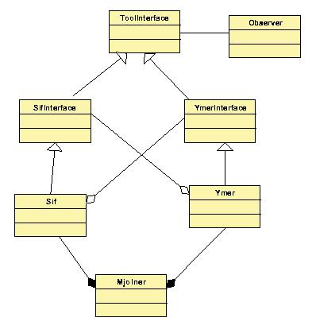

Til stede: ESS,FGC,SOSH,KFJ,HML,MBE,MEJ,KSJ
Referent: MEJ
Dato for næste møde: Torsdag d. 11. oktober 2001, kl. 14.15.
Xml-filerne og tilhørende PDF-print er lavet vha. Ideogramic UML.
Det generelle indtryk er, at der bør ryddes op i 'hvem', der har referencer til hvem og hvordan disse referencer sættes op, samt forsimpling af strukturen. De vigtigste umiddelbare ændringsforslag:
FGC: det er værd at bevare strukturen "Sif har en statisk SifExternalInterface, som arver fra SifInterface".
MEJ: 'SifExternalInterface' er vildledende. Kunne i stedet hedde 'SifInterfaceImpl'
for at understrege, at den implementerer SifInterface.
Formålet er at se på hvordan referencerne mellem de forskellige dele i applikationen bliver sat op.
FGC: hvis rækkefølgen er mærkelig, kan det skyldes, at det ikke er blevet revideret, da det blev lavet. Hvis det gik ned, blev der ændret noget - ellers ikke.
Ændringsforslag: oprydning, centralisering og ensretning i måden referencer bliver sat op på, evt. vha. faste init-operationer, som kaldes fra mjolner.bet.
Forslag til overordnet strukturering:

(pdf, xml i samme fil som ovenfor)
Der var enighed om, at en så overordnet ændring må
vente til nogle af punkterne (under 1.) ovenfor er fuldført.
FGC: SifApplication's updateBrowser-kald burde vel ordnes fra notifications
i stedet? Og Ymer burde være en observer på Group